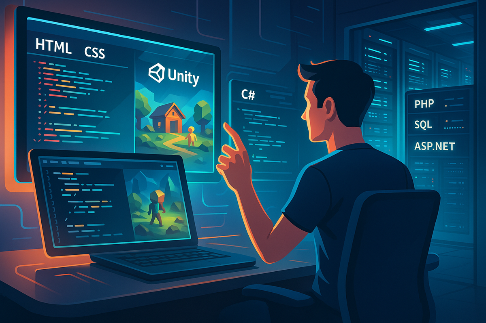

About
我是 羅晨瑋
龍華科技大學資訊網路工程系四年級學生，熱愛程式設計並樂於學習新技術。生活中，我習慣開發各種工具來提升效率，解決問題，並優化日常工作。我相信程式設計不只是寫程式，而是運用技術改善生活，因此我持續學習與實踐，專注於網頁開發、後端技術與 Unity 遊戲開發，希望成為兼具創新思維與實作能力的開發者。
Resume
| 年份 | 經歷 | 描述 |
|---|---|---|
| 2025 | 龍華科技大學 資訊網路工程系 | 完成學士學位，專注於網頁開發與後端技術。 |
| 2024 | Unity 遊戲開發專案 | 參與 Unity 遊戲開發，負責遊戲邏輯設計與效能優化，成功完成一款 2D 平台遊戲的開發。 |
| 2022 | 實習生 - 某科技公司 | 參與內部系統開發，負責前端設計與後端 API 整合。 |
| 2020 | 中華消防協會 網站重構專案 | 協助網站搬運與重構，實現響應式設計並優化使用者體驗。 |
Skills
Unity 遊戲開發
熟悉 Unity 引擎，能夠開發 2D 與 3D 遊戲，並使用 C# 編寫遊戲邏輯。具備遊戲設計與效能優化的經驗，能夠打造流暢且吸引人的遊戲體驗。
網頁開發專長
精通 HTML、CSS、JavaScript，能夠打造美觀且實用的網站，專注於提升使用者體驗，確保網站的響應式設計與跨瀏覽器兼容性。
後端技術
熟悉 PHP、SQL、ASP.NET，能夠開發強大且高效的後端系統，確保數據的安全性與穩定性，並與前端無縫整合。
綜合能力
具備全端開發能力，能獨立完成從前端到後端的開發，並優化網站效能。此外，熟悉 Unity 遊戲開發，能結合程式設計與創意，打造多樣化的應用。

Work